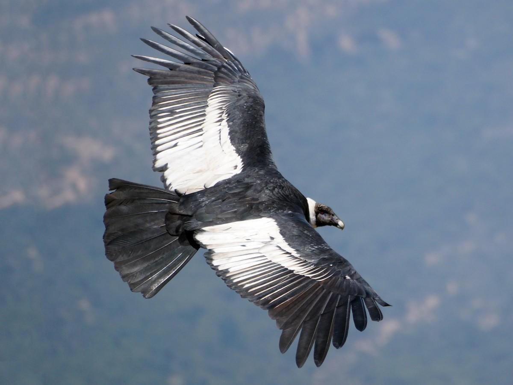
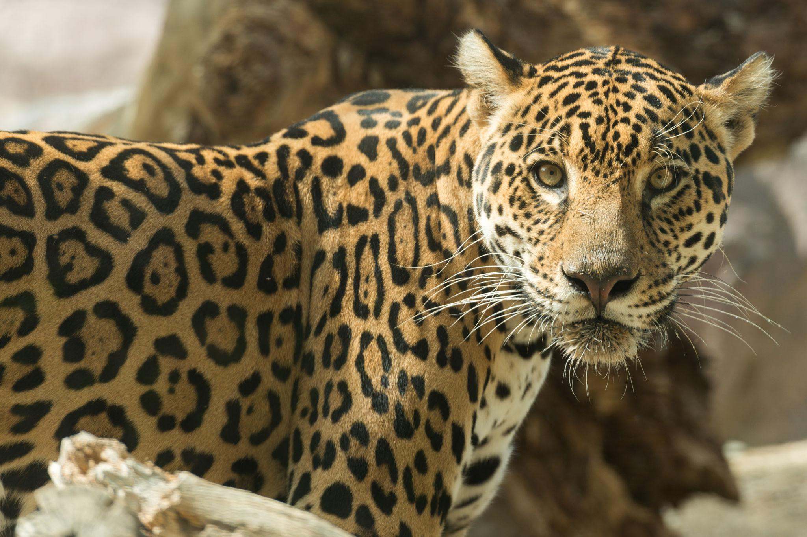
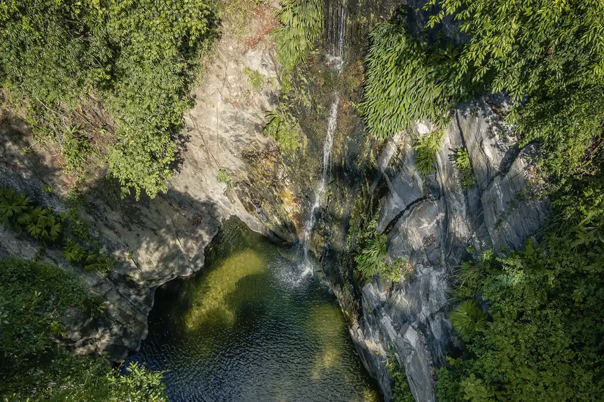
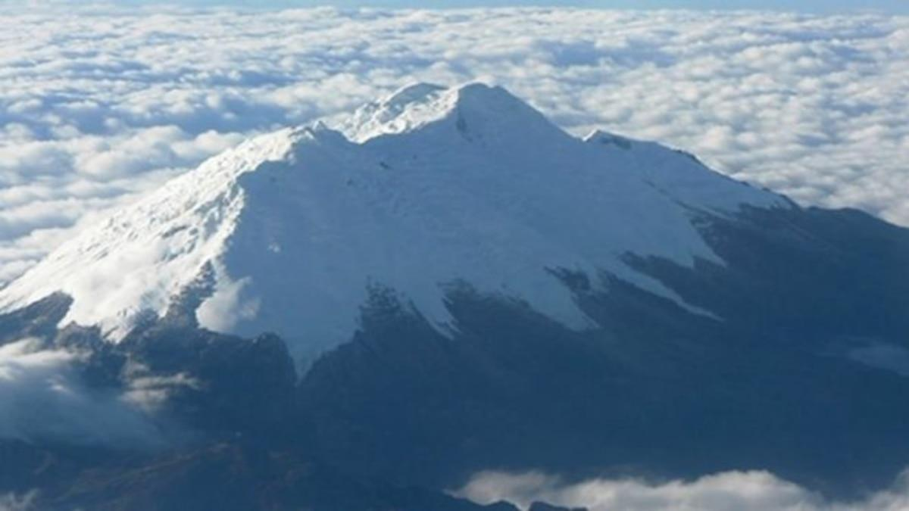
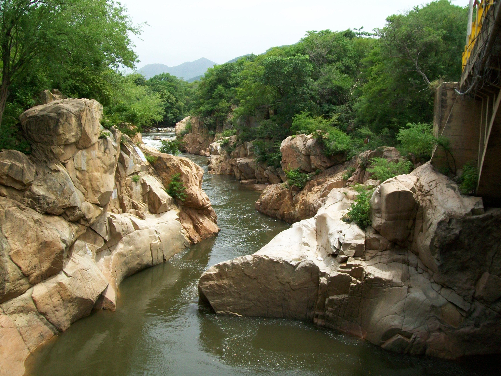

IED NICOLAS BUENAVENTURA
La montaña costera más alta del mundo alberga uno de los ecosistemas más complejos y biodiversos del planeta. Un refugio de vida entre el mar y el cielo, donde en solo 42 km se recorren casi todos los climas de la Tierra.
¿Sabías que...? La Sierra Nevada de Santa Marta es la montaña costera más alta del mundo: en solo 42 km en línea recta se pasa del nivel del mar a los 5.775 m de altitud, atravesando casi todos los pisos térmicos del planeta.
Desde los glaciares eternos hasta los bosques tropicales húmedos, cada piso térmico alberga formas de vida únicas e irrepetibles: cuanto más aislado el hábitat, más probable es encontrar especies que no existen en ningún otro lugar del planeta.
¿Sabías que...? Se dice que una especie es endémica cuando solo existe en un lugar del planeta. La Sierra Nevada tiene más de 860 especies endémicas: si su hábitat desaparece, desaparecen para siempre. (Ver glosario)

El Cóndor de los Andes, el Colibrí de Santa Marta y más de 60 especies endémicas hacen de esta sierra un paraíso para la ornitología mundial.

El jaguar, el puma, el oso de anteojos y el tapir andino deambulan por los bosques de niebla, últimos reductos de fauna silvestre neotropical.
Más de 600 especies de orquídeas y 400 bromelias adornan los bosques húmedos. Un jardín vertical de biodiversidad sin igual en el trópico.

A 2.000–3.000 m.s.n.m., la niebla permanente nutre musgos, líquenes y helechos que cubren cada superficie de estos bosques primarios.

Los picos Simón Bolívar y Cristóbal Colón coronan un sistema glaciar tropical único. Reservorios hídricos estratégicos para el Caribe.

36 cuencas hidrográficas nacen en sus laderas, abasteciendo de agua dulce a más de 1,5 millones de personas en la región Caribe.
Una ventana a los paisajes más espectaculares de la sierra más biodiversa del país.
Zonas de vida desde el mar Caribe hasta las cimas nevadas en solo 42 km de distancia horizontal.
¿Sabías que...? Este gradiente de altitud tan extremo en tan poca distancia se llama piso térmico: cada franja de altura tiene su propia temperatura, lluvia y ecosistema, como si subieras del Ecuador al Polo Norte en un solo día.
El punto más alto de Colombia y la montaña costera más alta del mundo.
5.775 m.s.n.m.Gemelo del Simón Bolívar, glaciar tropical en retroceso por el cambio climático.
5.775 m.s.n.m.Ciudad Teyuna, corazón espiritual de los pueblos Kogi, Arhuaco y Wiwa.
1.300 m.s.n.m.Principal río del flanco oriental, vital para la agricultura regional.
Flanco oriental383.000 ha protegidas. Reserva hídrica y núcleo de biodiversidad del Caribe.
383.000 haMiles de años de historia natural y cultural que hacen de la Sierra Nevada un tesoro irremplazable.
¿Sabías que...? Para los pueblos Kogi, Arhuaco, Wiwa y Kankuamo, la Sierra Nevada es el "Corazón del Mundo": creen que cuidar esta montaña es cuidar el equilibrio de todo el planeta.
Surgimiento de los Andes. La Sierra Nevada comienza su ascenso como bloque independiente, creando el aislamiento que impulsó la especiación endémica.
Los pueblos Tayrona establecen su civilización. Su cosmovisión integra a los seres humanos como guardianes del "Corazón del Mundo".
El Estado colombiano declara la Sierra Nevada Parque Nacional Natural, reconociendo su valor ecológico excepcional para la nación.
La UNESCO reconoce la Sierra Nevada como Reserva de Biosfera y Patrimonio de la Humanidad por su biodiversidad y valores culturales únicos.
Cambio climático, deforestación y presión colonizadora amenazan los ecosistemas. Nuevas alianzas entre pueblos indígenas, ciencia y estado generan esperanza.
Conocer las amenazas es el primer paso para actuar. La sierra necesita nuestra acción colectiva ahora.
¿Sabías que...? Los glaciares de los picos Bolívar y Cristóbal Colón podrían desaparecer por completo en las próximas décadas si el calentamiento global continúa al ritmo actual.
Los glaciares han retrocedido más del 70% en el último siglo. Las temperaturas en los páramos aumentan 0.3 °C por década.
Más de 60.000 ha de bosque nativo han sido convertidas en potreros y cultivos en los últimos 50 años.
El deterioro de los páramos reduce la regulación hídrica, generando sequías estacionales más severas en la región.
El crecimiento sin planificación genera presión sobre los ecosistemas de borde y corredores biológicos.
Más de 40 especies endémicas se encuentran en peligro crítico. La destrucción del hábitat fragmenta las poblaciones.
Cultivos de palma y ganadería extensiva avanzan sobre los ecosistemas más frágiles, eliminando biodiversidad nativa.
Estas son las estrategias que están dando resultado para proteger el Corazón del Mundo.
Programas de restauración con especies nativas en más de 8.000 ha, liderados por comunidades indígenas.
Los territorios de Kogi, Arhuaco y Wiwa funcionan como zonas de conservación con altísima efectividad.
Estaciones de monitoreo climático y biológico generan datos para decisiones de conservación basadas en evidencia.
Proyectos de conectividad entre parches de bosque que permiten el flujo genético de fauna y flora.
Programas que integran el saber ancestral indígena con la ciencia moderna en una visión biocultural.
Pagos por servicios ecosistémicos que remuneran a familias campesinas e indígenas por conservar los bosques.
Palabras clave para entender mejor la ecología de la Sierra Nevada. Haz clic en cada término para ver su definición.
Especie que vive de forma natural en un solo lugar del mundo y no se encuentra en ningún otro. Si su hábitat se destruye, la especie puede desaparecer para siempre.
Franja de altitud con temperatura, lluvia y vegetación características. La Sierra Nevada tiene casi todos los pisos térmicos del planeta, del cálido al nival, en muy poca distancia.
Gran comunidad de plantas y animales adaptada a un clima y tipo de suelo específico, como el bosque de niebla o el páramo.
Ecosistema de alta montaña tropical, por encima del límite del bosque, clave para capturar y regular el agua que abastece a los ríos.
Territorio reconocido por la UNESCO por su gran valor ecológico y cultural, donde se busca equilibrar la conservación con el desarrollo humano.
Categoría que indica que una especie tiene un riesgo extremadamente alto de extinguirse en estado silvestre en un futuro muy cercano.
Franja de vegetación que conecta dos zonas de bosque separadas, permitiendo que animales y plantas se muevan y se reproduzcan entre ellas.
Eliminación de bosques nativos, generalmente para dar paso a cultivos o ganadería, con graves efectos sobre la biodiversidad y el clima.
Responde las 10 preguntas y descubre qué tanto sabes sobre este ecosistema único.